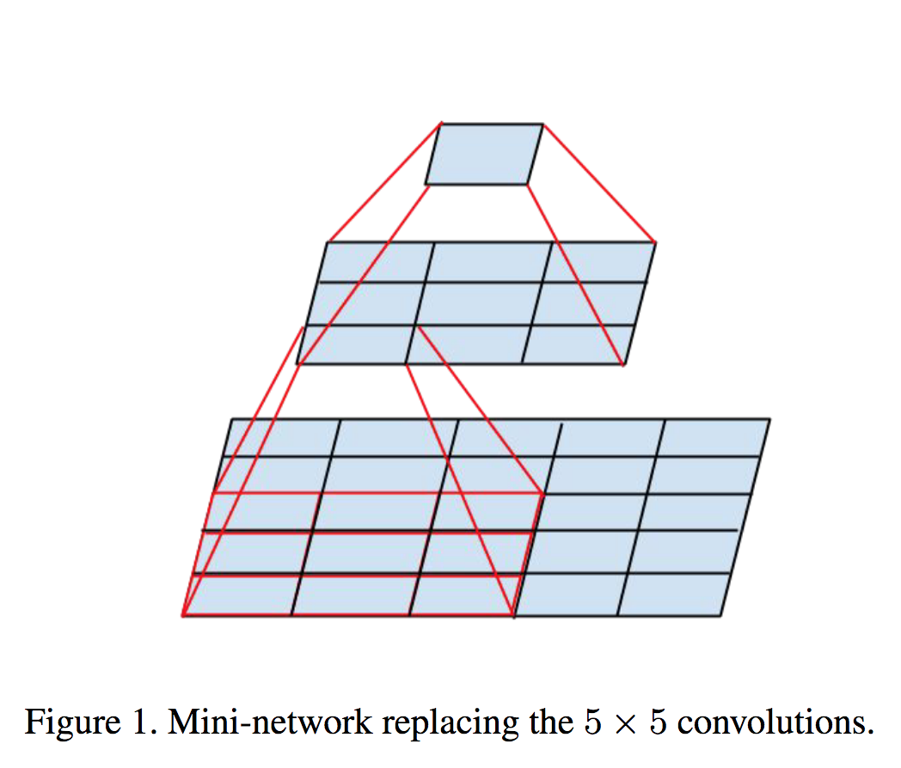

Deep Learning for
Computer Vision
Classic CNN Architectures
course starts soon..
We will start now with a quiz based on the first week material
You have 8 minutes to answer the quiz.
The quiz link:
Quiz Link
It will be copied in Mattermost and in the Zoom chat.


Valentin and Julia (Manpreet?)
- Homework on Transfer Learning
- Edit the homework: can we classify 3 classes? Alpaca, Horses and Dogs? (or choose whatever you want)